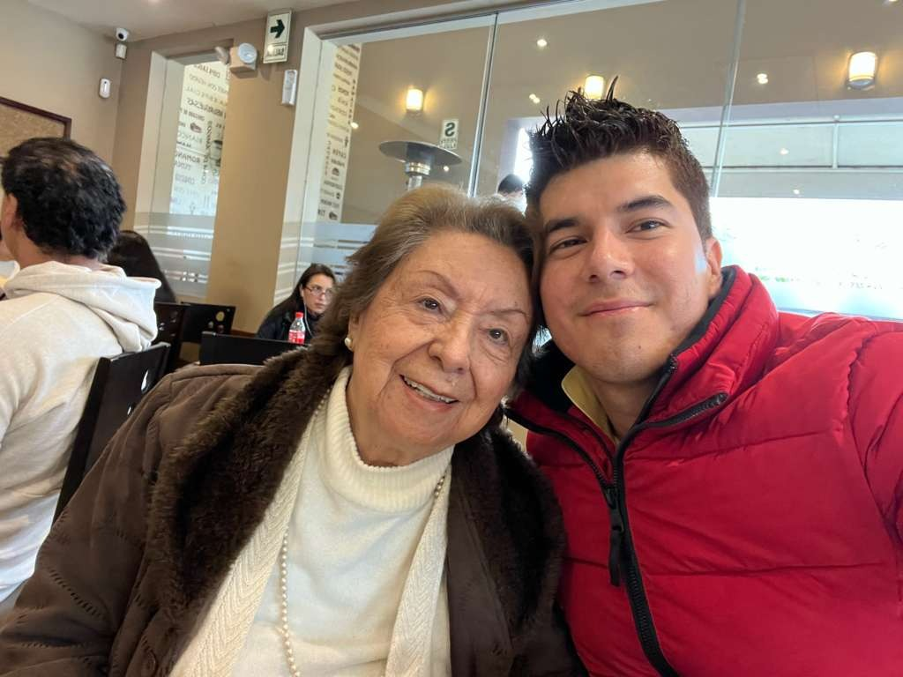

Alcira Victoria Lopez Ruiz

"Mama Giya"
1934 - Living | Grandmother
A true matriarch of our family, Mama Giya has been like a mother to me. As her first grandson, I've been blessed with her constant love and attention throughout my life.
She has always been very attentive to all of us, even to this day, and loves each of her grandchildren deeply. She is an excellent grandmother who continues to be a pillar of strength and love for our family.
Currently living in Lima, Peru, she remains an active and cherished presence in all our lives.